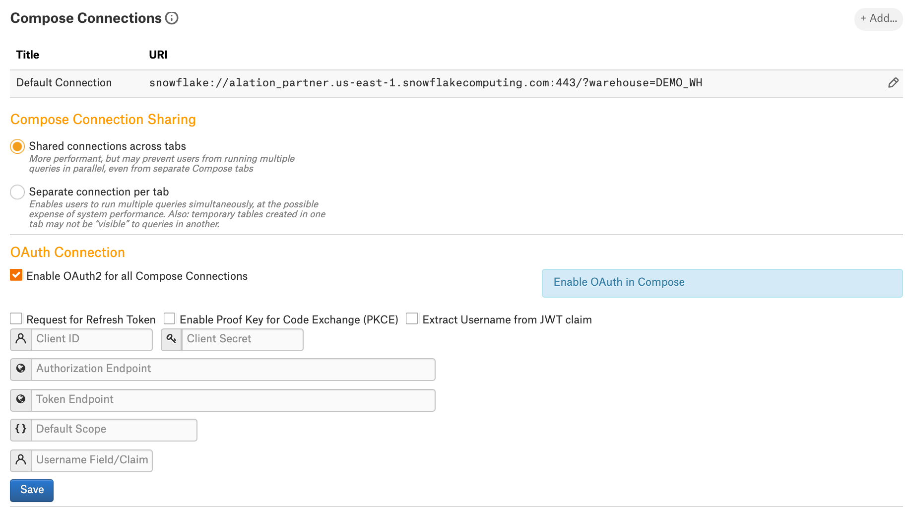
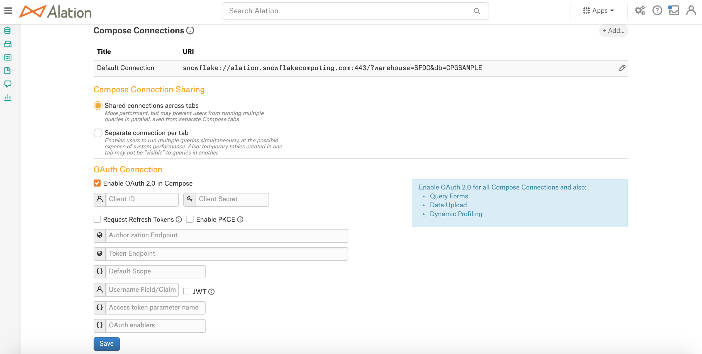
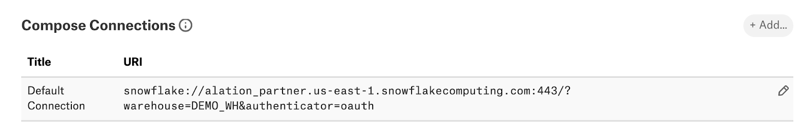
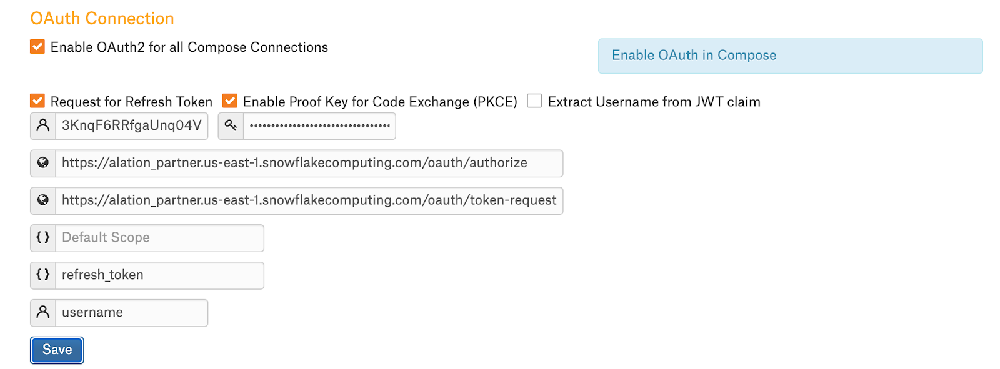
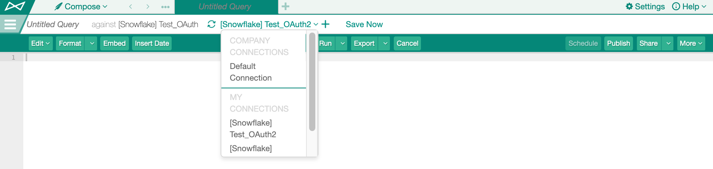
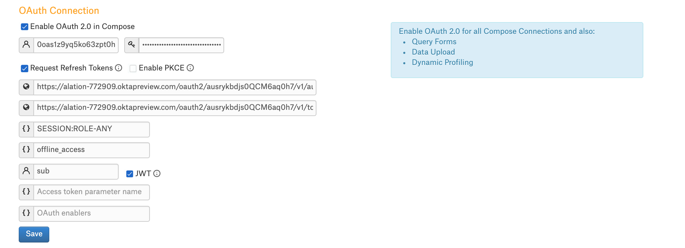

Snowflake OAuth For Compose¶
Available from release 2020.3
Alation supports the OAuth 2.0 protocol for connections from Compose to Snowflake data sources.
Note
OAuth 2.0 provides a secure mechanism for authorizing an application to access database resources. This process is overseen by an authorization server.
Authorization is managed with access tokens which are used by an application to access resources to which it is authorized according to the token until that token expires.
When an access token has expired, a refresh token can be used to retrieve a new access token without re-authorization if the authorization server is configured to issue refresh tokens and a refresh token has been requested.
Snowflake offers two OAuth pathways:
Snowflake built-in OAuth service
or
External OAuth service that integrates with an external OAuth 2.0-supporting authorization server.
Both these configurations are supported.
When OAuth is enabled for a Snowflake data source in Alation, a Compose user’s login credentials for Snowflake are not stored on the Alation server. When Compose users establish a connection to the data source, they are redirected to the Snowflake OAuth login screen in a new browser tab. They authenticate with the authorization server (built-in or external, depending on the configuration in Snowflake). After that the login screen tab closes, the tokens are stored, and Alation establishes the connection to the Snowflake resources.
Note
Alation can connect to Snowflake with OAuth regardless of whether or not federated login is set up for Snowflake. In either case, users will be first redirected to the Snowflake login page to authorize and consent to connections.
The following functionality is supported with OAuth:
Query execution in Compose
Scheduled query execution
Query forms
Excel Live Reports
Data upload
Dynamic Profiling
Desktop Compose
Snowflake Service Account¶
The service account that is set up in Alation during the Snowflake data source configuration and that is used for MDE, Profiling, and QLI does NOT use OAuth to connect to Snowflake. OAuth works for Compose users only.
No Enforcement of OAuth¶
Enabling OAuth for a Snowflake data source is an option and is not enforced. Connection with OAuth can be enabled by including the authenticator=oauth parameter into the Compose URI after OAuth configuration is provided in the data source Settings.
Compose users still have the ability to connect by directly providing their Snowflake credentials. In such a case, their credentials will be stored on the Alation server for reuse.
Snowflake Built-in OAuth¶
To use Snowflake built-in OAuth service, perform the following configuration:
STEP 1: Create a Snowflake Security Integration for Alation¶
Support for connections to Snowflake OAuth server from Alation is built on the Snowflake OAuth for Custom Clients. This requires a Snowflake security integration to be created for Alation in Snowflake.
Minimal Security Integration¶
CREATE SECURITY INTEGRATION <name>
TYPE = OAUTH
ENABLED = TRUE
OAUTH_CLIENT = CUSTOM
OAUTH_CLIENT_TYPE = 'CONFIDENTIAL'
OAUTH_REDIRECT_URI = 'https://<alation.company.com>/api/datasource_auth/oauth/callback';
Note that the name of the security integration is visible to users on the consent screen following authorization.
The redirect URI must refer to the /api/datasource_auth/oauth/callback endpoint on the Alation instance from which users will connect to Snowflake.
Extended Integration¶
The following parameters can be additionally used when creating a security integration:
Refresh Tokens¶
Refresh tokens can greatly minimize the frequency with which Compose users must re-authorize with the Snowflake authorization server. This can be particularly useful for features such as scheduled queries and Excel Live Reports.
OAUTH_ISSUE_REFRESH_TOKENS parameter: controls whether refresh tokens can be used to acquire new access tokens without re-authorization from the user.
OAUTH_REFRESH_TOKEN_VALIDITY: configures the lifetime of refresh tokens. Set to 90 days by default.
PKCE¶
OAUTH_ENFORCE_PKCE parameter: Alation uses PKCE to make the OAuth flow more secure. By default, this is not required by the Snowflake security integration.
TLS¶
OAUTH_ALLOW_NON_TLS_REDIRECT_URI parameter: not recommended
The integration can be configured to not enforce TLS using the OAUTH_ALLOW_NON_TLS_REDIRECT_URI parameter. If necessary, this allows the Snowflake authorization server to redirect to an Alation server over HTTP when returning authorization codes used in subsequent token requests.
Example¶
CREATE SECURITY INTEGRATION <name>
TYPE=OAUTH
ENABLED=TRUE
OAUTH_CLIENT = CUSTOM
OAUTH_CLIENT_TYPE='CONFIDENTIAL'
OAUTH_REDIRECT_URI='http://<alation.company.com>/api/datasource_auth/oauth/callback'
OAUTH_ISSUE_REFRESH_TOKENS = TRUE
OAUTH_REFRESH_TOKEN_VALIDITY = 3600;
OAUTH_ENFORCE_PKCE = TRUE
OAUTH_ALLOW_NON_TLS_REDIRECT_URI = TRUE
After the security integration has been created, proceed to Enable OAuth in Alation.
Snowflake External OAuth¶
Alation supports Snowflake External OAuth with IdPs that support the OAuth 2.0 authorization code grant type. Alation requires a client ID and Secret to request access tokens for authorization with Snowflake.
Specific OAuth providers supported by Snowflake are described in External OAuth in Snowflake documentation. In case of a custom provider, the JWT claims expected by Snowflake are described in External OAuth Token Payload Requirements.
Specific steps to register Alation in your OAuth environment for Snowflake will differ depending on the OAuth provider. You need to perform configuration on the Snowflake side and the IdP side before configuring OAuth in the Snowflake data source settings in Alation. Please refer to the Snowflake documentation linked above for details on how to set up OAuth with Snowflake-supported providers.
When registering Alation with your IdP, use the following redirect URL:
https://<your_Alation_URL>/api/datasource_auth/oauth/callback
For configuration on the Alation side, collect the values listed below from your OAuth environment. The required values can usually be found in the authorization server metadata file and in the authorization client settings.
Authorization client ID
Authorization client Secret
Authorization endpoint
Token endpoint
jwks_uri
If you wish to allow Compose users to switch roles using the USE ROLE statement, make sure the Snowflake security integration includes the required parameters to enable the any_role mode and that the authorization server configuration includes the required scopes.
For a specific example, see Example Configuration: External OAuth with Okta below.
Ensure that any IdP users expected to connect with access tokens issued by the authorization server also exist in Snowflake.
Snowflake Users¶
The login name for users as specified by EXTERNAL_OAUTH_SNOWFLAKE_USER_MAPPING_ATTRIBUTE in the Snowflake security integration for the External OAuth provider must be correctly mapped onto the value specified by EXTERNAL_OAUTH_TOKEN_USER_MAPPING_CLAIM (for example, “sub” (subject) claim for default Okta setup).
Also ensure that the user is explicitly assigned a default role within Snowflake, as the PUBLIC role is not automatically assigned to users without a default role when making connections with an External OAuth token. This, however, is not required if the role is specified as Default Scope in Alation or the authorization server, including the case when role switching is authorized.
Enable OAuth in Alation¶
Perform this configuration in Alation after performing the required configuration in Snowflake and /or on the external authorization server side.
To enable OAuth in Compose for Snowflake,
Open the data source Settings > General Settings tab, scroll down to the Compose Connections section, and locate the OAuth Connection block.
Select the checkbox Enable OAuth for all Compose Connections. This reveals a number of parameters for the OAuth setup:
2020.3:

2020.4 and later:

Specify the values. See OAuth Parameters.
Click Save.
Edit the default Compose connection to use OAuth as described below or add a new Compose connection that is OAuth-enabled. For making the connection string OAuth-enabled, add the query parameter authenticator=oauth to the connection URI with the & symbol as the separator.
Example:
snowflake://alation_test.us-east-1.snowflakecomputing.com:443/?warehouse=DEMO_WH&authenticator=oauth
Test the configuration in Compose by connecting to your Snowflake data source and running a test query.
Edit the Default Compose Connection¶
The Default Compose Connection inherits the URI provided during the data source set up. It is recommended to change the URI of the Default Connection under General Settings > Compose Connections so that Compose users connect via OAuth by default and are not.
Add the parameter authenticator=oauth to the Default Connection URI and save:

Now in Compose, when users use the default connection, they will be prompted to authenticate with the OAuth authorization server configured in Snowflake.
OAuth Parameters¶
Parameter |
Description |
Snowflake built-in OAuth |
Snowflake External OAuth |
|---|---|---|---|
Client ID |
Authorization Client ID |
Client ID provided by Snowflake when the client is registered with the security integration |
Client ID is usually available in the OAuth client application settings |
Client Secret |
Authorization Client Secret |
Client Secret is provided by Snowflake when the client is registered with the security integration |
Client Secret is usually available in the OAuth client application settings |
Authorization Endpoint |
The authorization endpoint to be used to obtain an authorization grant after a user authorizes a client with Snowflake. |
Stored in the security integration |
Is usually available in the IdP metadata file if one is provided |
Token Request Endpoint |
This endpoint returns access tokens or refresh tokens depending on the request parameters. |
Stored in the security integration |
Is usually available in the IdP metadata file if one is provided |
Default Scope |
The Scope parameters limit the operations and the role permitted by the access token. This field can be used to specify a default Snowflake role for every user. |
Can be left blank to use the Snowflake default value. The default is determined by the user’s default role. If no default role is assigned to the user, the default is PUBLIC. |
Scope is usually configured on the authorization server side if it supports scope. |
Request for Refresh Token |
Allows offline access or whether refresh tokens can be used to acquire new access tokens without re-authorization from the user. Refresh tokens can greatly minimize the frequency with which Compose users must re-authorize |
Should be selected if the OAUTH_ISSUE_REFRESH_TOKENS property is set to TRUE in the Snowflake security integration. |
Depends on the authorization server configuration. |
Refresh Scope |
Applies when the Request for Refresh Token is enabled. Use this field to specify the scope for Alation to use during authorization in order to request refresh tokens from the authorization server during token request. |
Set to: |
Depends on the authorization server configuration. |
Username field/claim |
Property of the top-level JSON attribute in the Snowflake authorization server response to a token request that contains the identity of the authorized Snowflake user. |
Set to: |
Can be obtained from the Snowflake security integration for the External IdP provider |
Enable PKCE Proof Key for Code Exchange |
PKCE is a way to make a token request more secure. Optional property. Select if available. |
Select if the OAUTH_ENFORCE_PKCE field of the security integration is set to TRUE |
Depends on the authorization server configuration. |
In 2020.3: Extract Username from JWT claim In 2020.4: JWT |
For most authorization servers, access tokens are issued as a JWT, and the username information can be extracted as a specific claim from the token. Alation needs to determine the Snowflake user who has been authorized and is used for the connection for both display purposes and to enable storage and tracking of multiple access tokens per Alation user and per connection URI. When this checkbox is left unselected, Alation attempts to extract the username information as a top-level attribute of the JSON response returned from the authorization server upon token request. |
Leave this checkbox unselected. Snowflake issues the username as a top-level JSON attribute in the response returned for the token request. |
Select this checkbox |
Access token parameter name* |
Available from 2020.4 Provide the name of the parameter your JDBC driver uses to pass in the OAuth token. Can be saved as blank. When no value is provided by the Admin, Alation supplies the default value that is accepted by the built-in driver. |
Can leave blank |
Can leave blank |
OAuth Enablers* |
Available from 2020.4 Provide a single parameter
or a list of parameters
separated by the |
Can leave blank |
Can leave blank |
* - The Access token parameter name and OAuth Enablers will be supplied with default values when saved as blank fields. The default values are the ones required by the default driver. You can leave these fields blank when using the built-in driver for Snowflake. If you are using a custom driver, specify the OAuth parameters accepted by your custom driver.
Configuration For Snowflake Built-In OAuth¶
Example:

Parameter Values:
Parameter |
Recommendations |
|---|---|
Client ID Client Secret |
Can be retrieved with the SYSTEM$SHOW_OAUTH_CLIENT_SECRETS function:
|
Authorization Endpoint Token Request Endpoint |
Can be retrieved with:
The Authorization Endpoint looks similar to:
The Token Request Endpoint looks similar to:
|
Default Scope |
The built-in Snowflake authorization server automatically assigns a
default scope if none is specified in the authorization request.
The default is determined by the user’s default role;
if no default role is assigned to the user, the default is PUBLIC.
Note that |
Request for Refresh Token |
For the built-in OAuth, this is controlled by the OAUTH_ISSUE_REFRESH_TOKENS parameter of the Snowflake security integration. Select this checkbox if the OAUTH_ISSUE_REFRESH_TOKENS property is set to TRUE in the security integration used for Alation. The expiry of refresh tokens can be configured via the OAUTH_REFRESH_TOKEN_VALIDITY parameter and defaults to 90 days. |
Refresh Scope |
Specify value: |
Username field/claim |
Specify value: |
Enable PKCE |
Select if the OAUTH_ENFORCE_PKCE property of the security integration is set to TRUE. |
Extract Username from JWT claim/JWT |
Leave unselected |
Access token parameter name |
Can be left blank |
OAuth Enablers |
Can be left blank |
Configuration for External Snowflake OAuth¶
Example:
Parameter Values:
Parameter |
Recommendations |
|---|---|
Client ID Client Secret Authorization Endpoint Token Request Endpoint |
The values can usually be obtained from the OAuth client configuration. They may also be present in the server metadata file when one is available. |
Default Scope |
The OAuth provider may allow for specifying the default scope and
may allow for creating policies for assigning such default scope.
It is important that scope for at least one Snowflake role
is specified if Snowflake users do not have a default role assigned
within Snowflake.
The authorization server may only issue authorization for Default Scope
specified in the authorization server configuration if no other scope
is specified during authorization. Any scope specified in the Alation
settings Default Scope takes priority over the Default Scope
specified by the authorization server.
If you choose to provide a specific role for the Default Scope
in Alation, note that the authorization server may expect the case
to match between the Scope specified in the authorization request and
the Scope configured for the authorization server. The authorization
server configuration must declare the scope to match case, for example:
|
Request for Refresh Token |
Select this checkbox in order to use the refresh grant type to allow Alation to automatically retrieve new access tokens. |
Refresh Scope |
If the refresh grant type is enabled, Refresh Scope specifies what scope Alation will use during authorization in order to request refresh tokens from the authorization server during token request. Different authorization servers may use a different value or not require refresh scope at all and issue refresh tokens automatically based on server configuration. The authorization server may only issue authorization for default scope specified in the authorization server configuration if no other scope is specified during authorization. Any scope specified here in the Alation settings Refresh Scope, or the Alation settings Default Scope, or by specifying a role in the connection URI can result in none of the default scope specified in the authorization server configuration to be applied. |
Extract Username from JWT claim/JWT |
This should be selected for external OAuth with Snowflake. For most authorization servers, the username information can be extracted as a specific claim from the token; otherwise, Alation attempts to extract the username information as a top-level attribute of the JSON response returned by the authorization server upon token request. |
Username field/claim |
The claim attribute to be used to retrieve the user requesting authorization from the access token. This is the value of the EXTERNAL_OAUTH_TOKEN_USER_MAPPING_CLAIM field of the Snowflake security integration for the External OAuth provider. The value here must match the value of a Snowflake user’s login name as specified by EXTERNAL_OAUTH_SNOWFLAKE_USER_MAPPING_ATTRIBUTE in the security integration. EXTERNAL_OAUTH_TOKEN_USER_MAPPING_CLAIM will differ for Okta, Azure AD, PingFederate, and other custom client authorization servers. |
Enable PKCE |
This should be selected if the Authorization Server is configured to use PKCE. This will not be possible for some setups. For example, with Okta’s Web application type, PKCE is not available. |
Access token parameter name |
Can be left blank |
OAuth Enablers |
Can be left blank |
Role Switching¶
Role switching is not supported with Snowflake built-in OAuth. With built-in OAuth, Compose users can connect with either of the following:
The role they provided in the Connection URI;
The role specified in the Default Scope in the OAuth configuration parameters in Alation;
If neither of the above is specified, then the connection will be established with the default role assigned to them in Snowflake. If no default role is assigned, the connection uses the role PUBLIC.
Role switching is supported with the External OAuth configuration. This means the USE ROLE statement in Compose can be used to switch to any role accessible to the Snowflake user.
Note
Role switching needs the Default Scope to be set to SESSION:ROLE-ANY.
To apply the Default Scope SESSION:ROLE-ANY, ensure that the EXTERNAL_OAUTH_ANY_ROLE_MODE field is set to ENABLE in the Snowflake security integration used in the External OAuth configuration.
Even if the configured Default Scope for the data source includes SESSION:ROLE-ANY, any role specified by the user in the connection URI will still validly result in additional scope specified in the authorization request. For example, Okta issues an access token valid for both scopes.
If the configured Default Scope for the data source includes a specific Snowflake role, the more permissive role is assigned as the current role when the connection is initiated even if the user’s default role is less permissive. In this case, role switching is not allowed as it is only enabled with the SESSION:ROLE-ANY value specified in the Default Scope.
Using Case-Sensitive Roles or Roles with Special Characters¶
Applies from version 2021.3
Snowflake roles that are case-sensitive or contain special characters require double-quoted identifiers in order to be resolved. An example can be a role defined in Snowflake as role.name:
CREATE ROLE IF NOT EXISTS "role.name"
A user may have such a role assigned as their default role. If not, they should follow the recommendations below to switch to such a role.
External OAuth¶
Switch roles with the USE ROLE statement and using the double-quoted identifiers.
Built-in Snowflake OAuth¶
Specify the role in the connection URI, using URL-encoding for the role name, for example:
role=%22role.name%22
URI example:
snowflake://your_domain.snowflakecomputing.com:443/?warehouse=DEMO&authenticator=oath&role=%22role.name%22
Connect in Compose¶
Compose users can connect to the OAuth-enabled Snowflake data source either selecting a connection from Company Connections or from My Connections.
Company Connections are defined under General Settings > Compose Connections. My Connections lists private connections created by users:

OAuth Connection URI¶
In order to create a connection that uses OAuth, the URI must include the authenticator=oauth query parameter. For example:
snowflake://account.snowflakecomputing.com:443/?warehouse=WH1&authenticator=oauth
Specify a Role for Connection¶
Compose users can specify a role in the Connection URI:
snowflake://alation_partner.us-east-1.snowflakecomputing.com:443/?warehouse=DEMO_WH&authenticator=oauth&role=<role_name>
When a role is specified the connection allows to query Snowflake within the scope of this role.
If role-switching is configured, then users can switch to a different role available to them in Snowflake with the USE ROLE statement.
Example Configuration: External OAuth with Okta¶
For details on how Snowflake works with Okta as External OAuth provider, refer to Configure Okta for External OAuth in Snowflake documentation.
To set up External OAuth with Okta, perform the following configuration:
In Snowflake: if this has not been done yet, set up External OAuth with Okta;
In Okta: create an OAuth client application for Alation;
In Alation: enable and configure the OAuth for your Snowflake data source.
Okta Client Application¶
When creating the client application in Okta, use Web as the Application type.
In the client application settings:
Under General > General Settings > Application > Allowed grant types, ensure that the Authorization Code and Refresh Token checkboxes are selected;
(Optional) Under General > General Settings > User Consent > User consent, select Require consent;
Under General > General Settings > LOGIN > Login redirect URIs, add
https://<alation.company.com>/api/datasource_auth/oauth/callback/Ensure the URI ends with “/”
HTTP can be specified without having to change any TLS settings
Configuration in Alation¶
Property |
Value |
|---|---|
Client ID |
Public identifier for the client. Can be found in the Okta client application settings > Client Credentials. |
Client Secret |
Secret used by the client to request the access token. Can be found in the Okta client application settings > Client Credentials. |
Request Refresh Tokens |
Select this checkbox |
Enable PKCE |
Leave this checkbox clear |
Authorization Endpoint |
Can be found in the metadata file of the Okta authorization server that is used for External OAuth in Snowflake |
Token Request Endpoint |
Can be found in the metadata file of the authorization server |
Default Scope |
Can be found in the authorization server settings > Scopes.
Example: |
Refresh Scope |
Set to |
Username Field/Claim |
Usually set to |
Extract Username from JWT claim /JWT |
Select this checkbox |
Access token parameter name |
Leave clear (this results in Alation using the default value) |
OAuth enablers |
Leave clear (this results in Alation using the default value) |
{kind=link}
{kind=link}
Logs¶
The log entries for OAuth authorization are to be found in /opt/alation/site/logs/uwsgi.log (path inside the Alation shell).